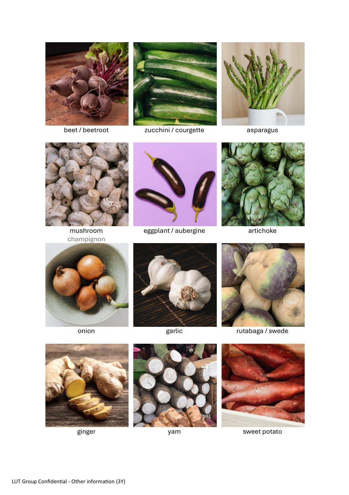
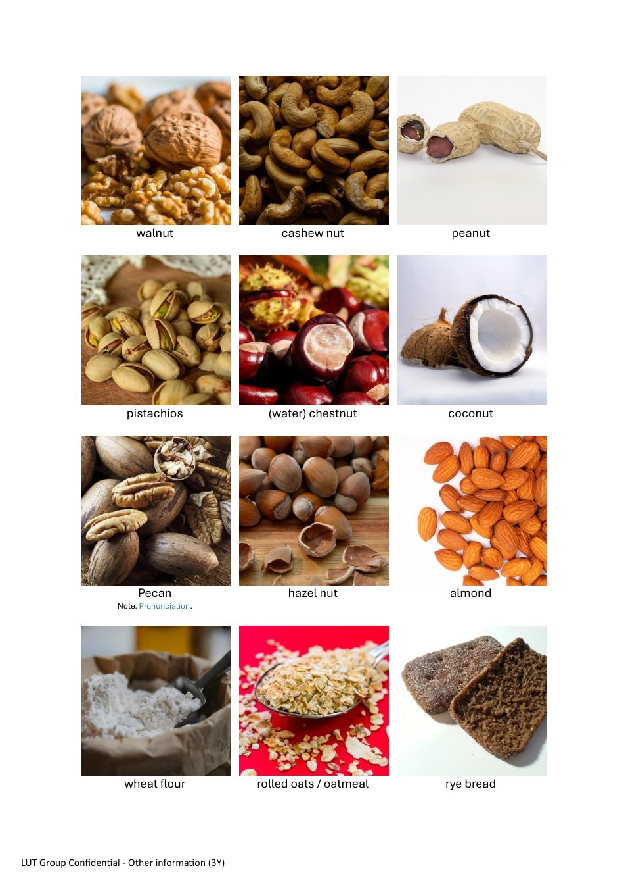
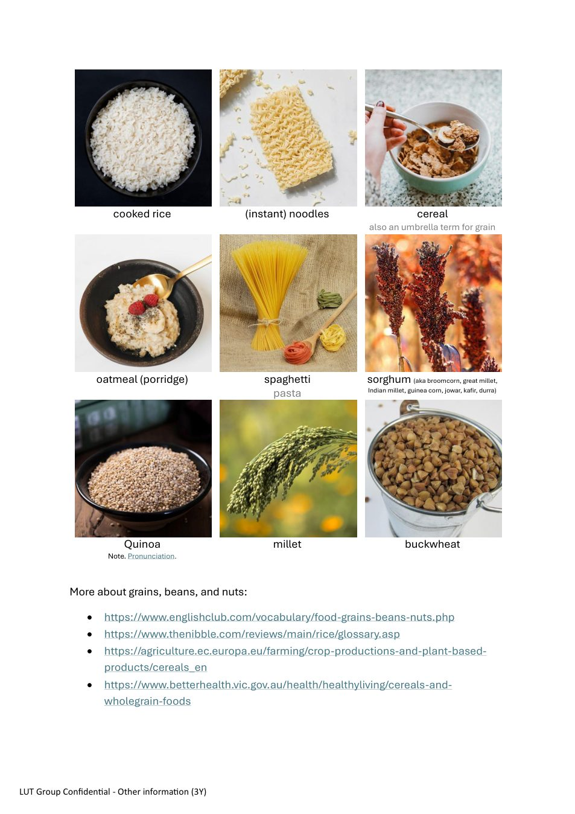
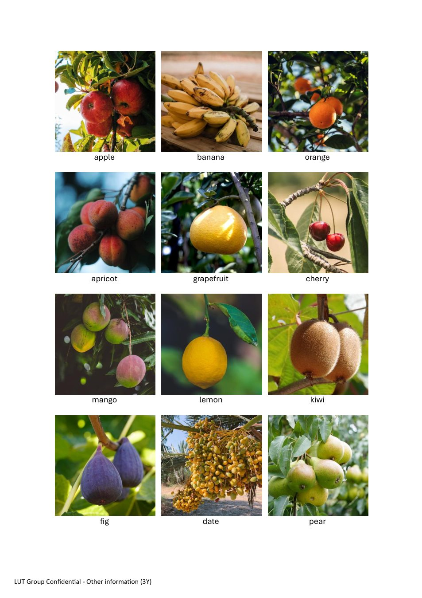
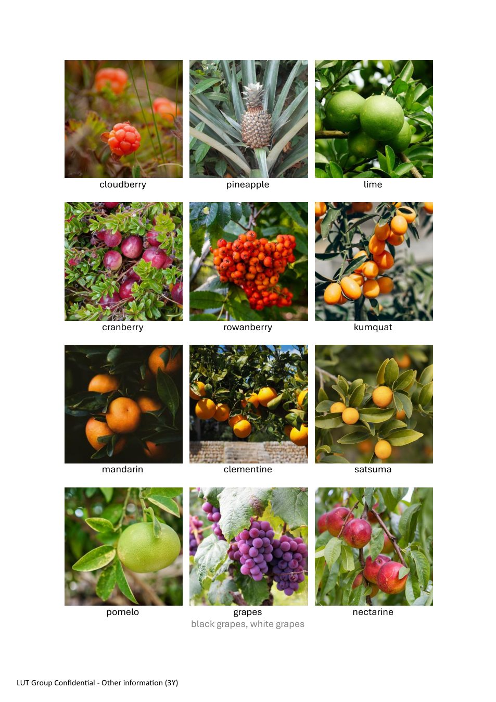
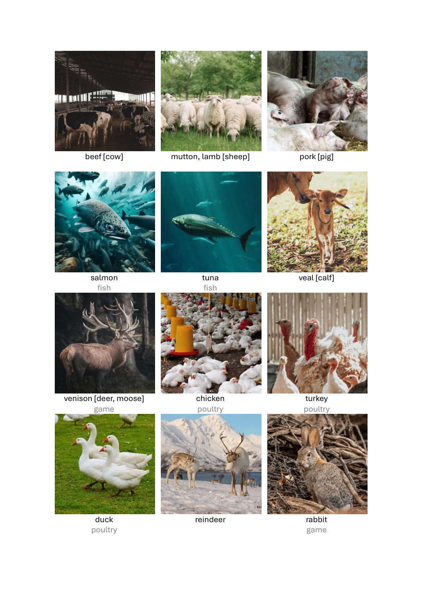
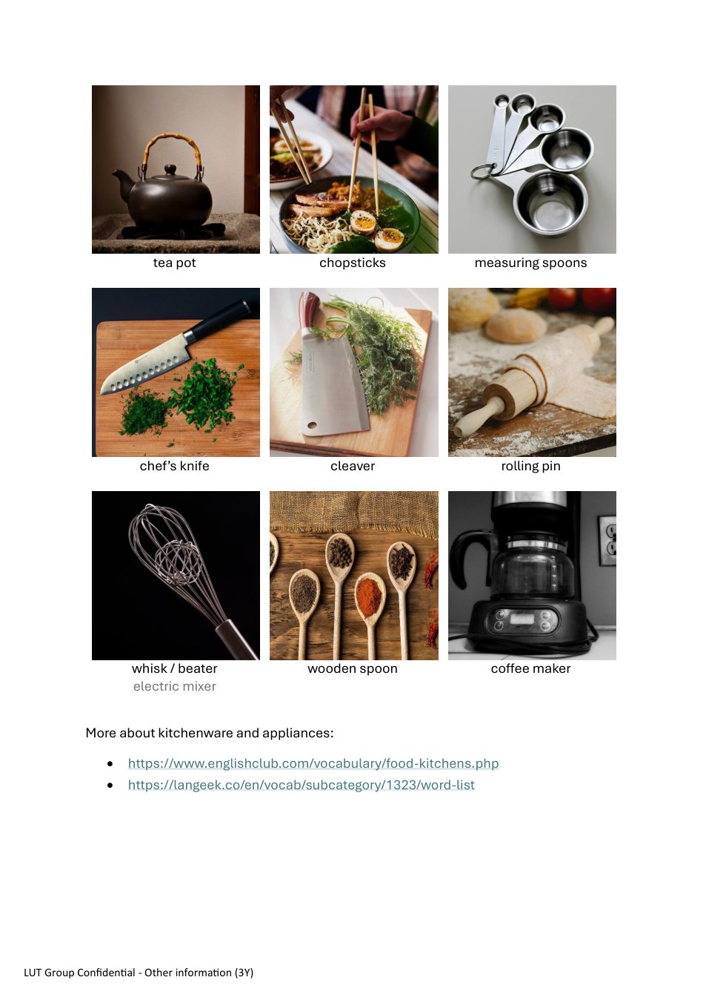
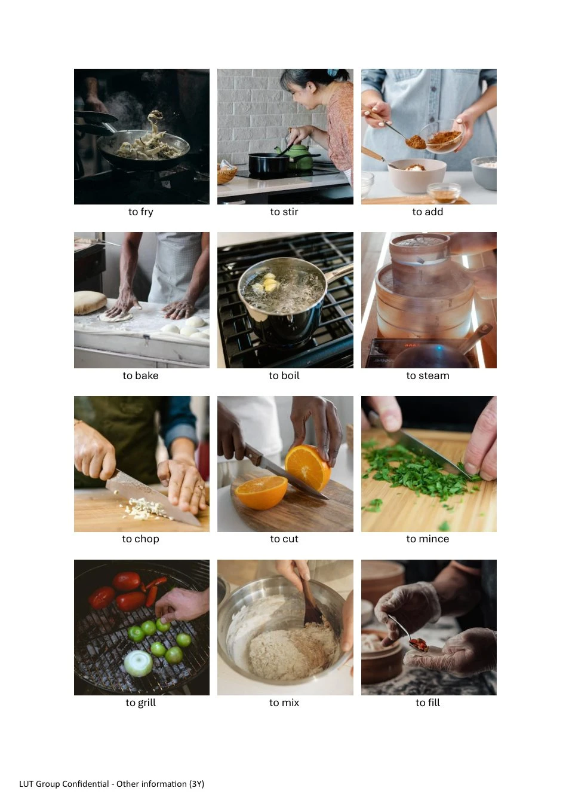

KE00DA03 大学英语 · 第 03 / 10 讲
第 3 讲 · 词汇与语法诊所
Vocabulary and Grammar Clinic
所属章节：第 2 章 词汇语法与演讲表达
资料来源 · 11 项 / 已附 0 项
4_UNIT 1 Building Know-how_8_Food material.html未附原文件4_UNIT 1 Building Know-how_6_EXERCISE Computers Phones.html未附原文件4_UNIT 1 Building Know-how_7_Meeting 5 homework.html未附原文件4_UNIT 1 Building Know-how_9_Meeting 7 homework.html未附原文件5_UNIT 2 Expressing Opinions_5_GRAMMAR Online Exercises.html未附原文件5_UNIT 2 Expressing Opinions_6_Meeting 11 homework.html未附原文件food_vocab_greens.pdf未附原文件food_vocab_grain-bean-nut.pdf未附原文件food_vocab_fruits-berries.pdf未附原文件food_vocab_animal-products-and-substitutes.pdf未附原文件food_vocab_kitchenware.pdf未附原文件
未附文件仅列原始名称；版本与核对日期由维护者登记。
本节定位
第 3 讲把课程里分散在三处的语言训练合并成一套系统：主题词汇（食物与厨具、电脑与手机部件、专业词表）、构词与词族、语法诊所（词序、否定、频率副词、四类问句、介词 at/in/on）。课程把它们放在 Meeting 5 至 Meeting 11 的作业里循环出现，说明它们是「必须形成习惯」而不是「知道就行」的内容。
为什么合并成一讲：词汇和语法在产出时是同一条流水线——选词错了是搭配问题，句子排错了是词序问题，介词用错了往往两者都是。把三件事一起练，才能在口语里一次到位。
学完本讲你应当能够：
- 按「认识—搭配—产出」三层管理主题词汇，并自建 glossary
- 正确使用食物与厨具词汇，区分可数与不可数、选择量词
- 用 24 个烹饪动词描述流程，搭配不错
- 说出电脑与手机主要部件的英文名，并用 8 个常用搭配描述故障
- 用词族表扩展专业词汇，判断前缀的含义
- 按 S–V–O–M–P–T 排出正确词序，放对频率副词与否定词
- 构造 Yes/No、wh-、间接问句与反意疑问句四类问句
- 按时间、地点、抽象搭配三条线选对 at/in/on
3.1 词汇的三层与 glossary 模板
一个词真正属于你，要经过三层：recognition（看到能懂）、collocation（知道它和谁连用）、production（自己能用对）。课程里反复出现的 Collect words and chunks 与 Complete the document with vocabulary from field-specific exercise 就是在逼你从第一层走到第三层。
glossary 建议用五列，一次课新增 5 至 8 条，考前直接复习这张表：
| English | 音标 / 词性 | 中文 | 搭配 | 自造句 |
|---|---|---|---|---|
| plug | /plʌɡ/ n. | 插头 | a loose plug, the wrong type of plug | The plug is the wrong type. |
| wiring | /ˈwaɪərɪŋ/ n. 不可数 | 布线 | check the wiring, faulty wiring | Mona checked the wiring manually. |
| standstill | /ˈstændstɪl/ n. | 停机 | come to a standstill, a production standstill | When is a standstill possible? |
| subcontractor | /ˌsʌbkənˈtræktə/ n. | 分包商 | call a subcontractor, a local subcontractor | I’ll call our subcontractor immediately. |
3.2 食物与厨具：可数性决定量词
课程的食物材料分六组图片：蔬菜（33 张）、谷物豆类与坚果（33 张）、水果与浆果（45 张）、动物制品与替代品（33 张）、厨具（33 张）、烹饪动词（24 张），另有一组「菜肴」词表与四个 Cambridge／Moodle 小测。背单词表之前先解决一个语法前提：可数还是不可数。
| 类别 | 不可数（不加 -s） | 可数（可加 -s） | 量词示范 |
|---|---|---|---|
| 主食 | bread, rice, pasta, flour | a loaf, a roll, a slice | two slices of bread, a bowl of rice |
| 乳制品 | milk, cheese, butter, yoghurt | a cheese（一种奶酪） | a glass of milk, a piece of cheese |
| 肉与鱼 | beef, pork, chicken（肉）, fish（肉） | a chicken（一只鸡）, two fish（两条鱼） | a kilo of beef, a fillet of fish |
| 蔬果 | —（多数可数） | an onion, two carrots, a cucumber | a head of lettuce, a clove of garlic |
| 调味 | salt, pepper, sugar, oil | — | a pinch of salt, a tablespoon of oil |
3.3 24 个烹饪动词：动作要分得清
烹饪动词是最容易被「一个 cook 走天下」毁掉的词群。按动作类型分组记，比按字母背有效：
| 动作类型 | 动词 | 典型搭配 | 易混点 |
|---|---|---|---|
| 切 | chop, slice, dice, mince, grate | chop an onion, slice the bread, dice the carrots, mince the garlic, grate the cheese | chop 粗切、dice 切丁、mince 切末 |
| 去皮与分份 | peel, core, deseed | peel the potatoes, core the apple | peel 只用于皮 |
| 混合 | stir, whisk, blend, knead | stir the sauce, whisk the eggs, blend the soup, knead the dough | whisk 打蛋／奶油，knead 揉面 |
| 加热 | boil, simmer, steam, fry, deep-fry, sauté, roast, bake, grill | boil the pasta, simmer the sauce, steam the fish, fry an egg, roast the vegetables, bake a cake, grill the chicken | bake 只用于烤箱（面包、蛋糕），roast 用于肉与蔬菜 |
| 调味与处理 | season, marinate, drain, mash, pour | season with salt, marinate the meat, drain the pasta, mash the potatoes | season 用调料，marinate 需时间 |
流程描述示范：First, peel the potatoes and dice them. Then boil them for about fifteen minutes, drain them, and mash them with butter and a pinch of salt. 注意每个动作都用一般现在时祈使句或顺序副词（first、then、after that、finally），这是食谱与工艺说明的通用语体。
3.4 电脑与手机：部件与故障表达
Meeting 5 的选做练习给两条线：电脑（Quizlet 部件图 + GeeksforGeeks 组件文章）或手机（维修参考图 + 移动网络原理）。两条线共享同一批高频搭配，掌握 16 个就够描述日常故障。
| 部件 | 英文 | 常见搭配 / 故障句 |
|---|---|---|
| 主板 | motherboard | The motherboard is faulty. |
| 处理器 | processor / CPU | The CPU overheats under load. |
| 内存 | memory / RAM | The laptop needs more RAM. |
| 硬盘 / 固态盘 | hard drive / SSD | The hard drive crashed and I lost the files. |
| 电源 | power supply / charger | The power supply failed. / Plug in the charger. |
| 显卡 | graphics card | The graphics card is not detected. |
| 散热风扇 | cooling fan | The cooling fan is noisy. |
| 接口 | port / USB port | The USB port is loose. |
| 屏幕 | screen / display | The screen is cracked. |
| 电池 | battery | The battery runs out quickly. / I need to recharge. |
| SIM 卡槽 | SIM tray | Insert the SIM tray with the pin. |
| 话筒与扬声器 | microphone / speaker | The microphone is muted. |
八个万能动词搭配：install / update / uninstall software、plug in、charge、reboot、freeze、crash、run out of battery、back up files。句法上注意：crash 与 freeze 是不及物动词（The app crashed.），不要写成 I crashed the app（那是「我把它弄崩了」）。
复合名词的重音落在第一个成分：ˈmotherboard、ˈhard drive、ˈpower supply、ˈUSB port、ˈcooling fan。重音放错会让听者以为是两个词（hard + drive）。
3.5 词族与构词：一个词变四个
专业词汇量不是靠背单词表堆出来的，而是靠词族（word family）扩展。看到一个新词，同时记它的名词、动词、形容词、副词形式：
| 动词 | 名词（动作） | 名词（人或物） | 形容词 |
|---|---|---|---|
| produce | production | product / producer | productive |
| install | installation | installer | installed |
| connect | connection | connector | connected |
| consume | consumption | consumer | consumable |
| maintain | maintenance | maintainer | maintainable |
| apply | application | applicant / appliance | applicable |
前缀决定方向：re-（再次：rebuild、reconnect）、un-（否定：unplug、unsafe）、over-（过度：overheat、overload）、under-（不足：undersized、underestimate）、sub-（下级：subcontractor、subsystem）。这些前缀在课程语料里都出现过，属高频。
3.6 专业词表：从对话里取词
Meeting 5 的作业要求 Complete the document with vocabulary from field-specific exercise：从你另一门专业课（物理、数学等）的习题里挑一道，把其中的术语、动词与句式抄进共享词表。Meeting 7 又要求把这些词用进一个自制小测（Chinese food quiz，2 至 4 题，选项式，链接贴到 Padlet）。
这意味着词表不是「词典摘抄」，而是从真实任务里长出来的。示范一条来自课程对话的词条：
| 术语 | 中文 | 搭配 | 例句 |
|---|---|---|---|
| cross connection | 交叉连接 | the cross connection room | They found the cross connection room on the second floor. |
| spare part | 备件 | carry spare parts, order a spare part | I have the necessary spare parts with me. |
| technician | 技术员 | send a technician, a service technician | I’ll ask them to send a technician. |
| comply with | 符合 | comply with the standard / the regulation | The plug does not comply with the standard. |
3.7 词序：S–V–O–M–P–T
英语陈述句的基本顺序是「主语—谓语—宾语」，状语按 方式（Manner）—地点（Place）—时间（Time） 排列，简称 M–P–T。中文习惯「时间—地点—动作」，正好相反，这是词序错误的最大来源。
| 错误 | 正确 | 规则 |
|---|---|---|
| I went yesterday by bus to Helsinki. | I went to Helsinki by bus yesterday. | 地点先于时间；方式先于地点 |
| He works in the lab carefully. | He works carefully in the lab. | 方式先于地点 |
| We discussed in the meeting the problem. | We discussed the problem in the meeting. | 宾语紧跟动词，不被状语切开 |
| Every day I usually check the log. | I usually check the log every day. | 频率副词在主谓之间，时间状语可句末 |
频率副词（always, usually, often, sometimes, seldom, never）的位置有两条硬规则：实义动词前（I usually check …）、be 动词后（He is always late.）。有助动词时夹在助动词与主要动词之间：I have never seen this error before.
否定句的构成也遵循同一逻辑：有助动词就在助动词后加 not（It does not comply with the standard.），没有就借 do/does/did（We did not find any loose connections.）。一般过去时的否定用 did + 原形，不要写成 did not found。
3.8 四类问句，一套判断流程
课程在 Meeting 5 与 Meeting 7 连续布置了九组词序练习，覆盖陈述句、否定句、Wh- 问句、Yes/No 问句、间接问句与反意疑问句。它们的构造可以用一张流程走完：
| 类型 | 结构 | 例 | 要点 |
|---|---|---|---|
| Yes/No 问句 | 助动词／be／情态 + 主语 + 主动词 | Does the plug comply with the standard? | 主动词回原形 |
| Wh- 问句 | 疑问词 + 助动词 + 主语 + 主动词 | When is a standstill possible? | 疑问词本身作主语时不再借 do |
| 主语提问 | Who / What + 谓语（第三人称单数） | Who called the supplier? | 不说 Who did call … |
| 间接问句 | 引导句 + 陈述语序 | Could you tell me where the port is? | 不倒装，句末不用问号（若主句是陈述） |
| 反意疑问句 | 陈述 + 简短反问（前肯后否） | It doesn’t comply, does it? | 助动词与主语要与前半句一致 |
间接问句是最容易错的一类，因为学习者会把直接问句的倒装照搬进去：Could you tell me where is the port? 错，应为 where the port is。同理 Do you know when does the meeting start? 应为 when the meeting starts。
反意疑问句的四条特殊规则：I am … 的反问是 aren’t I；Let’s … 用 shall we；祈使句用 will you；含 never、hardly、nothing 等否定词的前半句视为否定，反问用肯定（He never comes late, does he?）。
语调也参与意义：反问句用降调表示「我确信，你同意吧」；用升调表示「我真的在问」。这一点与本课程朗读测试的语调要求直接相连。
3.9 介词 at / in / on：三条线各管一段
课程给了五组介词练习（at/in/on 的句子填空、时间表达、混合练习、Moodle 练习）。归纳成三条线就够用：
| 线 | at（点） | in（范围／容器） | on（面／接触） |
|---|---|---|---|
| 时间 | at 8 o’clock, at noon, at night, at Christmas | in July, in 2023, in the morning, in two hours | on Monday, on 5 May, on Monday morning |
| 地点 | at the station, at the office, at the top | in Finland, in the room, in the cabinet | on the table, on the wall, on the second floor |
| 抽象与固定搭配 | at risk, at least, good at, arrive at（小地点） | in charge of, interested in, arrive in（城市／国家）, involved in | on purpose, depend on, based on, focused on |
还有一批高频动词搭配必须整块记，因为它们不服从上面任何一条线：comply with、substitute A for B、replace A with B、responsible for、depend on、consist of、result in、prevent from。
3.10 产出前的两张检查卡
写任何句子（作业稿、幻灯片、邮件）之前，用两张卡快速过一遍：词序卡（主语在不在最前、状语是否 M–P–T、宾语有没有被状语切开、频率副词位置）与介词卡（时间用 at/in/on 哪条线、动词固定搭配是什么、可数性是否需要量词）。这两张卡覆盖了本课程语法作业里的绝大部分考点。
中式高频错集中在可数性与词序：bread、rice 不可数，说 a slice of bread、a bowl of rice，不能说 a bread。陈述状语按 方式—地点—时间（M–P–T） 排：I went to Helsinki by bus yesterday，不是 I went yesterday by bus to Helsinki。频率副词在实义动词前、be 动词后（I usually check the log／He is always late）。suggest 是全军覆没区：只能 suggest V-ing 或 suggest (that) + 主语 + 原形，不能说 suggest sb to do。
词汇按“认识—搭配—产出”三层管理，词族一词四用比背释义牢固：Regular maintenance keeps the system maintainable and reduces production downtime 一句里用了三个词族成员。故障描述靠固定搭配：The CPU overheats under load、The hard drive crashed、The battery runs out quickly；crash／freeze 是不及物动词，说 The app crashed，不是 I crashed the app。复合名词重音落在第一个成分（ˈmotherboard、ˈcooling fan），重音错会让听者以为是两个词。
3.11 五套食物词汇卡全表（与 3.2/3.3 互补）
moodle-updates/2026-11-21/linked/32632/link-03…07）。3.3 的 24 个烹饪动词即 food_vocab_cooking.pdf，此处不重复；下面补齐五套名词卡，共约 180 词。英美同物异名（卡片成对出现，考试易错）：aubergine（英）= eggplant（美）；courgette（英）= zucchini（美）；swede（英）= rutabaga（美）；maize（英）= corn（美）；beetroot（英）= beet（美）；chilli（英）= chili（美）；minced meat（英）= ground meat（美）；cooker（英）= stove（美）。
3.11a 蔬菜（greens 35 词）
| English | 中文 | 说明 / 例句 |
|---|---|---|
| potato | 土豆 | baked / mashed potatoes |
| carrot | 胡萝卜 | grated carrot |
| pumpkin | 南瓜 | Halloween carving |
| cabbage | 卷心菜 | red / white cabbage |
| lettuce | 生菜 | a head of lettuce |
| turnip | 芜菁 | |
| tomato | 番茄 | 复数 tomatoes（易错拼写） |
| cucumber | 黄瓜 | as cool as a cucumber |
| chili / chilli | 辣椒 | 英 chilli / 美 chili |
| bell pepper / sweet pepper | 甜椒 | |
| red/yellow/green pepper | 红/黄/绿椒 | |
| cauliflower | 花椰菜 | broccoli 的近亲 |
| celery | 芹菜 | celery sticks |
| beet / beetroot | 甜菜根 | 美 beet / 英 beetroot |
| zucchini / courgette | 西葫芦 | 美 zucchini / 英 courgette |
| asparagus | 芦笋 | 不可数用法常见 |
| mushroom | 蘑菇 | |
| champignon | 口蘑（双孢菇） | 法源词 |
| eggplant / aubergine | 茄子 | 美 eggplant / 英 aubergine |
| artichoke | 朝鲜蓟 | artichoke hearts |
| onion | 洋葱 | spring onion 大葱/小葱 |
| garlic | 蒜 | a clove of garlic 一瓣蒜 |
| rutabaga / swede | 芜菁甘蓝 | 美 rutabaga / 英 swede |
| ginger | 姜 | ginger tea |
| yam | 山药/薯蓣 | |
| sweet potato | 红薯 | |
| radish | 小萝卜 | |
| avocado | 牛油果 | guacamole |
| broccoli | 西兰花 | 不可数 |
| fennel | 茴香 | fennel bulb |
| parsnip | 欧防风 | 根菜类 |
| spinach | 菠菜 | 不可数 |
| celeriac | 根芹 | celery root |
| squash | 笋瓜类（总称） | butternut squash |
| kale | 羽衣甘蓝 | superfood 语境高频 |
3.11b 谷物豆类坚果（grain-bean-nut 32 词）
| English | 中文 | 说明 / 例句 |
|---|---|---|
| wheat | 小麦 | whole wheat 全麦 |
| oats | 燕麦（粒） | |
| barley | 大麦 | pearl barley |
| rye | 黑麦 | rye bread 芬兰常见 |
| corn (maize) | 玉米 | 美 corn / 英 maize |
| rice | 大米 | cooked rice 米饭 |
| kidney bean | 红腰豆 | chili con carne |
| green beans | 四季豆 | 复数 |
| soybean | 大豆 | soy sauce 酱油 |
| peas | 豌豆 | split peas |
| chickpeas | 鹰嘴豆 | hummus 原料 |
| lentils | 小扁豆 | 红/绿 lentil |
| walnut | 核桃 | |
| cashew nut | 腰果 | |
| peanut | 花生 | peanut butter |
| pistachios | 开心果 | |
| coconut | 椰子 | coconut milk |
| pecan | 山核桃 | pecan pie |
| hazel nut | 榛子 | nutella 原料 |
| almond | 杏仁 | almond milk |
| wheat flour | （小麦）面粉 | |
| rolled oats / oatmeal | 燕麦片 | porridge 原料 |
| rye bread | 黑麦面包 | 芬兰食堂高频 |
| cooked rice | 米饭 | raw rice 生米 |
| cereal | 谷物早餐 | 亦泛指 grain 谷物 |
| oatmeal (porridge) | 燕麦粥 | 美 oatmeal / 英 porridge |
| spaghetti | 意大利细面 | 不可数 |
| pasta | 意面（总称） | 不可数 |
| quinoa | 藜麦 | 读 /ˈkiːnwɑː/ |
| millet | 小米 | |
| buckwheat | 荞麦 | 芬兰 kasha |
| wholegrain-foods | 全谷物食品 | 包装标签高频 |
3.11c 水果浆果（fruits-berries 43 词）
| English | 中文 | 说明 / 例句 |
|---|---|---|
| apple | 苹果 | |
| banana | 香蕉 | |
| orange | 橙子 | |
| apricot | 杏 | |
| grapefruit | 西柚 | |
| cherry | 樱桃 | |
| mango | 芒果 | |
| lemon | 柠檬 | |
| kiwi | 猕猴桃 | |
| fig | 无花果 | |
| date | 椰枣 | date 亦是「约会/日期」 |
| pear | 梨 | |
| plum | 李子 | |
| pomegranate | 石榴 | |
| watermelon | 西瓜 | |
| honeydew (melon) | 蜜瓜 | |
| cantaloupe | 哈密瓜（网纹瓜） | |
| lingonberry | 越橘 | 芬兰 berry 高频 |
| blueberry | 蓝莓 | 芬兰森林常见 |
| strawberry | 草莓 | |
| raspberry | 覆盆子 | |
| blackberry | 黑莓 | |
| gooseberry | 醋栗 | |
| currant | 红/黑加仑 | |
| cloudberry | 云莓 | 北欧限定，贵 |
| pineapple | 菠萝 | |
| lime | 青柠 | |
| cranberry | 蔓越莓 | |
| rowanberry | 花楸果 | 芬兰路树常见 |
| kumquat | 金桔 | |
| mandarin | 橘子 | |
| clementine | 小柑橘 | |
| satsuma | 无籽蜜橘 | |
| pomelo | 柚子 | |
| grapes | 葡萄 | a bunch of grapes |
| nectarine | 油桃 | |
| boysenberry | 博伊森莓 | |
| dragon fruit (pitaya) | 火龙果 | |
| passion fruit (granadilla) | 百香果 | |
| star fruit (carambola) | 杨桃 | |
| arctic raspberry/bramble | 北极悬钩子 | |
| chokeberry (aronia) | 野樱莓 | |
| buckthorn | 沙棘 | 芬兰 sea buckthorn 高频 |
3.11d 动物制品与替代品（animal products 35 词）
| English | 中文 | 说明 / 例句 |
|---|---|---|
| eggs | 鸡蛋 | boiled / fried / scrambled |
| honey | 蜂蜜 | 不可数 |
| milk | 牛奶 | whole / skimmed milk |
| cheese | 奶酪 | 芬兰bread table 常客 |
| vegan cheese / cheeze | 素食奶酪 | 拼写 cheeze 标产品 |
| yogurt | 酸奶 | 英 yoghurt 亦见 |
| vegan/plant butter | 植物黄油 | |
| oil | 油 | olive / rapeseed oil |
| ice cream | 冰淇淋 | |
| sour cream | 酸奶油 | |
| vegan sour cream | 素食酸奶油 | |
| buttermilk | 酪乳 | 芬兰 piimä |
| condensed milk | 炼乳 | |
| condensed coconut milk | 椰浆炼乳 | |
| plant-based cream | 植物奶油 | 标签 dairy-free |
| salmon | 三文鱼 | 芬兰 loop 温泉鱼 |
| fish | 鱼（总称） | fish and chips |
| tuna | 金枪鱼 | 罐头高频 |
| game | 野味 | moose 驼鹿肉属 game |
| chicken | 鸡肉 | |
| poultry | 禽肉（总称） | 分类词，非单只鸟 |
| turkey | 火鸡 | 感恩节语境 |
| duck | 鸭肉 | |
| reindeer | 驯鹿肉 | 芬兰特色 |
| rabbit | 兔肉 | |
| veggie burger/patty | 素食汉堡饼 | |
| steak | 牛排 | medium rare 三分熟 |
| ribs | 肋排 | BBQ ribs |
| minced meat | 肉末 | 英 minced / 美 ground |
| bacon | 培根 | |
| tofu | 豆腐 | |
| seitan | 面筋蛋白 | 素食蛋白 |
| tempeh | 天贝（发酵豆饼） | 印尼源词 |
3.11e 厨具（kitchenware 34 词）
| English | 中文 | 说明 / 例句 |
|---|---|---|
| fork | 叉子 | |
| knife | 刀 | 复数 knives |
| spoon | 勺子 | |
| plate | 盘子 | |
| glass | 玻璃杯 | glasses 亦指眼镜 |
| silverware / cutlery | 餐具（总称） | 美 silverware / 英 cutlery |
| wok (pan) | 炒锅 | 中餐高频 |
| frying pan | 平底煎锅 | |
| casserole dish | 烤盅/砂锅 | |
| spatula | 锅铲 | |
| ladle | 长柄勺 | serve soup |
| vegetable peeler | 削皮器 | |
| grater | 擦丝器 | grate cheese |
| chopping board | 砧板 | 英 board / 美 cutting board |
| measuring cup | 量杯 | 烘焙必备 |
| glass bowl / steel bowl | 玻璃/钢盆 | |
| baking tray | 烤盘 | 英 tray / 美 sheet |
| cooking pot | 汤锅 | |
| blender | 搅拌机（破壁） | |
| kettle | 水壶 | 芬兰人烧水必备 |
| electric kettle | 电热水壶 | |
| toaster | 烤面包机 | |
| stove / cooker / range | 灶 | 美 stove / 英 cooker |
| oven | 烤箱 | in the oven |
| colander | 滤锅/沥水篮 | drain pasta |
| tea pot | 茶壶 | |
| chopsticks | 筷子 | 复数，a pair of |
| measuring spoons | 量勺 | |
| cleaver | 菜刀（中式） | |
| rolling pin | 擀面杖 | |
| whisk / beater | 打蛋器 | whisk 亦是动词 |
| electric mixer | 电动打蛋器 | |
| wooden spoon | 木勺 | |
| coffee maker | 咖啡机 | 芬兰人均咖啡量世界第一 |
芬兰特色词（课堂材料专门标注）：rye bread 黑麦面包、lingonberry 越橘、cloudberry 云莓、reindeer 驯鹿肉、buttermilk (piimä)、sea buckthorn 沙棘——这些词在芬兰超市与课堂对话里出现率极高，属于「本地加分词汇」。
3.11f 词卡原版图（芬兰课堂发的那种卡片）
五套名词卡 + 烹饪动词卡的原版图页（共 19 页，每页约 12 张卡片）。文字表在 3.11a–e，图文对照着记；图片可放大。
蔬菜卡（greens，3 页）



谷物豆类坚果卡（grain-bean-nut，3 页）



水果浆果卡（fruits-berries，4 页）




动物制品与替代品卡（animal products，3 页）



厨具卡（kitchenware，3 页）



烹饪动词卡（cooking verbs，2 页）


拓展深化 3.10 跨文化技术沟通认知修辞与隐喻映射（Cognitive Metaphor in Engineering）
学术英语并非词汇的孤立罗列，而是通过认知概念隐喻（Conceptual Metaphor）将抽象物理与计算模型映射到具象世界。理解隐喻映射能帮助大学生从本质上驾驭专业英语学术动词与介词搭配。
1. 概念隐喻映射机制：在现代软件与系统工程中，90% 以上的核心术语建立在物理实体隐喻上：
- 计算作为流水线与容器：
Pipeline（管道传输数据）、Buffer / Queue（队列排队）、Thread Pool（线程池注入与提取）； - 内存作为物理空间与生命周期：
Memory Leak（内存像液体容器破损般泄漏）、Garbage Collection（垃圾回收）、Dangling Pointer（指针悬挂在虚空中）。
2. 学术语域与修辞规约：在工程学术论文与国际技术会议中，应避免主观色彩浓厚的口语动词，使用具精确语义的对应学术拉丁源动词：
| 日常/口语表达 | 专业工程学术动词 | 精确语义内涵与搭配范例 |
|---|---|---|
| get rid of errors | eliminate / mitigate faults | 强调系统性消除或降低容错边界 |
| make it faster | optimize / accelerate latency | 强调通过算法复杂度或硬件吞吐调优 |
| look into problems | investigate / probe bottlenecks | 强调使用性能探针进行经验主义实证排查 |
| set up | configure / instantiate | 强调对象实例化或参数空间静态配置 |
| English | 中文 | 说明 / 例句 |
|---|---|---|
| collocation | 搭配 | Words that naturally go together: heavy rain, not strong rain. |
| uncountable noun | 不可数名词 | Bread and rice take no plural and no a/an. |
| quantifier | 量词 | a slice of bread, a pinch of salt, a clove of garlic. |
| word family | 词族 | produce, production, product, productive. |
| prefix | 前缀 | re-, un-, over-, under-, sub- change the meaning of a word. |
| word order | 词序 | English follows subject–verb–object, then manner–place–time. |
| frequency adverb | 频率副词 | Always, usually and never go before the main verb, after be. |
| indirect question | 间接问句 | Could you tell me where the port is? — no inversion. |
| question tag | 反意疑问句 | It doesn’t comply, does it? |
| preposition of time | 时间介词 | at 8, in July, on Monday. |
| comply with | 符合 | All plugs must comply with the standard. |
| substitute A for B | 用 A 替换 B | We substituted the old plugs for the new type. |
| plug in | 插上电源 | Plug in the charger before you start. |
| run out of battery | 电量耗尽 | My phone ran out of battery during the meeting. |
| standstill | 停机 | When is a standstill possible? |
| season with | 用……调味 | Season the soup with salt and pepper. |
A. I checked yesterday the wiring in the cabinet carefully.
B. He always is late for the morning meeting.
C. We didn’t found any loose connection.
解：A 有三处问题。宾语 the wiring 被时间状语切开，应紧跟动词；状语顺序应为方式—地点—时间。改为 I checked the wiring in the cabinet carefully yesterday.
B 是 be 动词与频率副词位置错：频率副词在 be 之后，改为 He is always late for the morning meeting.
C 是过去时否定的形式错：did 已承担时态，主动词回原形，改为 We didn’t find any loose connection. 另外 any 用于否定句与疑问句，正确。
通用思路：先定位谓语 → 把宾语贴回谓语后 → 状语按 M–P–T 排 → 最后查频率副词与助动词后的动词形式。
A. Where is the cross connection room? B. When does the meeting start? C. Does the plug comply with the standard?
解：三步：保留疑问词 → 去掉倒装、改回陈述语序 → 调整时态与人称（主句为现在时则不用改时态）。
A → Could you tell me where the cross connection room is?（is 移到主语后）。
B → Could you tell me when the meeting starts?（does 消失，动词恢复第三人称单数 -s）。
C 没有疑问词，用 if／whether：Could you tell me if the plug complies with the standard?（同样恢复 -s）。
通用思路：疑问词照抄 → 助动词删掉、主动词还原 → 主语提前到动词前 → 主句过去时则整体后移一个时态。
A. The plugs are the wrong type, ______? B. You haven’t called the supplier yet, ______? C. Let’s check the wiring again, ______?
解：A 前半句肯定（are），反问用否定，助动词与主语一致：aren’t they? 说话人已看到实物、只是寻求确认，用降调。
B 前半句有否定词 haven’t，反问用肯定：have you? 若真的在询问对方是否已联系，用升调；若只是寒暄式确认，用降调。
C Let’s 的特殊反问是 shall we?，固定搭配，用降调。
通用思路：看前半句肯定／否定（含 never、hardly、nothing 视为否定）→ 取同一助动词与代词 → 前肯后否、前否后肯 → 最后按「真问用升、求确认用降」定调。
① The meeting starts ______ 8:15 ______ Friday morning. ② The spare parts are ______ the cabinet. ③ We arrived ______ Helsinki ______ 2023. ④ The technician is good ______ troubleshooting. ⑤ The report is based ______ last year’s data.
解：① at 8:15（钟点是 at）＋ on Friday morning（具体某天的上午用 on，不用 in）。
② in the cabinet：柜子是一个三维容器，用 in。③ arrived in Helsinki（城市用 in）＋ in 2023（年份用 in）。
④ good at：能力形容词的固定搭配。⑤ based on：抽象依据用 on。
通用思路：先判「点／范围／面」→ 再看是不是固定搭配（good at、based on、responsible for）→ 固定搭配优先于三条线规则。
- 把下列不可数名词组成正确的量词短语：bread（两片）、rice（一碗）、salt（一撮）、garlic（一瓣）、oil（一勺）。
- 用 first／then／after that／finally 写一段 5 句的煮意面流程，至少用 5 个烹饪动词。
- 改正词序：She explained in the meeting the procedure clearly. / I have never seen this error before yesterday. / Why you didn’t call the technician?
- 把 Do you know what is the standstill time? 改为正确间接问句，并说明改动理由。
- 填介词并说明：responsible ___ / interested ___ / comply ___ / substitute the old plug ___ a new one / arrive ___ Lappeenranta。
- 给你的专业词表新增 3 条（术语、搭配、例句），并各造一句与自己项目有关的句子。
答案与思路
1. two slices of bread / a bowl of rice / a pinch of salt / a clove of garlic / a tablespoon of oil。规则：不可数名词靠「容器 + of」计量，量词本身可数（two slices、two cloves）。
2. 参考：First, boil a large pot of water. Then add the pasta and simmer for about ten minutes. After that, drain it and pour the sauce over it. Finally, season with salt and grate some cheese on top. 五个动词：boil、simmer、drain、pour、grate；另加 season。
3. She explained the procedure clearly in the meeting.（宾语紧跟动词，方式在地点前）；I had never seen this error before yesterday.（before yesterday 指过去某一时点之前，用过去完成时）；Why didn’t you call the technician?（Wh- 问句：疑问词 + 助动词 + 主语）。
4. Do you know what the standstill time is? 间接问句用陈述语序，is 移到主语后；主句为一般现在时，从句时态不变。
5. responsible for；interested in；comply with；substitute the old plug for a new one（substitute A for B）；arrive in Lappeenranta（城市）。
6. 参考三条：voltage /ˈvəʊltɪdʒ/ 电压，搭配 measure the voltage，例 Measure the voltage across the resistor.；torque /tɔːk/ 扭矩，搭配 apply torque，例 Apply a torque of 20 Nm to the bolt.；tolerance /ˈtɒlərəns/ 公差，搭配 within tolerance，例 The diameter must be within tolerance.
把下列词按可数/不可数分组，并配一个正确的量词短语：broccoli, cherry, garlic, pasta, lettuce, salmon, chopsticks, oatmeal。
参考答案
可数：a cherry 樱桃一颗 / two heads of lettuce 两颗生菜 / a pair of chopsticks 一双筷子。不可数：some broccoli / a clove of garlic 一瓣蒜 / a bowl of pasta / a fillet of salmon 一块三文鱼排 / a bowl of oatmeal。易错：broccoli、pasta、oatmeal 都不可数，不加 a；garlic 论「瓣」用 clove。
本讲方法清单
句子产出四步检查（词序 + 介词 + 可数 + 时态）
- 主语与谓语是否相邻，宾语有没有被状语切开
- 状语是否按方式—地点—时间排列，频率副词是否在主谓之间（be 之后）
- 名词可数性是否影响冠词与量词，动词搭配的介词是否背对
- 否定与问句里助动词是否已承担时态，主动词是否回原形
问句生成流程
- 判断是 Yes/No 还是 Wh-，需不需要疑问词
- 找助动词／be／情态；没有就按人称借 do／does／did
- 主动词还原，主语回到动词前（间接问句用陈述语序）
- 反意疑问句取同一助动词，前肯后否，最后定升调或降调
词汇入库
- 五列词卡（英文、音标词性、中文、搭配、自造句）一次写全
- 每课新增 5 至 8 条并复习旧条目
- 每条词卡至少朗读三遍，确认重音位置
| 源文件 | 位置 / 页码 | 覆盖内容 |
|---|---|---|
| 4_UNIT 1/8_Food material.html | 全篇 | 蔬菜、谷物豆类坚果、水果浆果、动物制品、厨具、烹饪动词六组图词表；菜肴词表；四个小测 |
| 4_UNIT 1/6_EXERCISE Computers Phones.html | 全篇 | 电脑部件、手机部件与移动网络的选做阅读 |
| 4_UNIT 1/7_Meeting 5 homework.html | 全篇 | CEE 练习、专业词表文档、九组词序语法练习 |
| 4_UNIT 1/9_Meeting 7 homework.html | 全篇 | 同一组九项语法练习 + 自制中国食物小测（2 至 4 题、贴 Padlet） |
| 5_UNIT 2/5_GRAMMAR Online Exercises.html | 全篇 | at/in/on 句子填空与时间表达两组练习 |
| 5_UNIT 2/6_Meeting 11 homework.html | 全篇 | 介词混合、时间介词与 Moodle 介词练习 |
| （拓展） | — | 可数性分组表、烹饪动词动作分类、复合名词重音、词族与前缀表、间接问句与反意疑问句特殊规则为教学补充 |
| （跳过） | — | Padlet、Quizlet、Cambridge、GeeksforGeeks 等外链只保留其词汇任务，不逐条复述 |